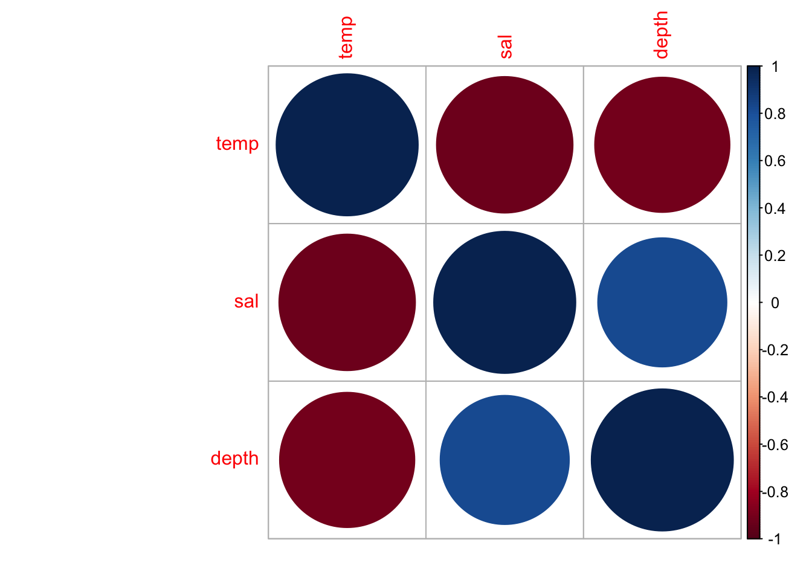
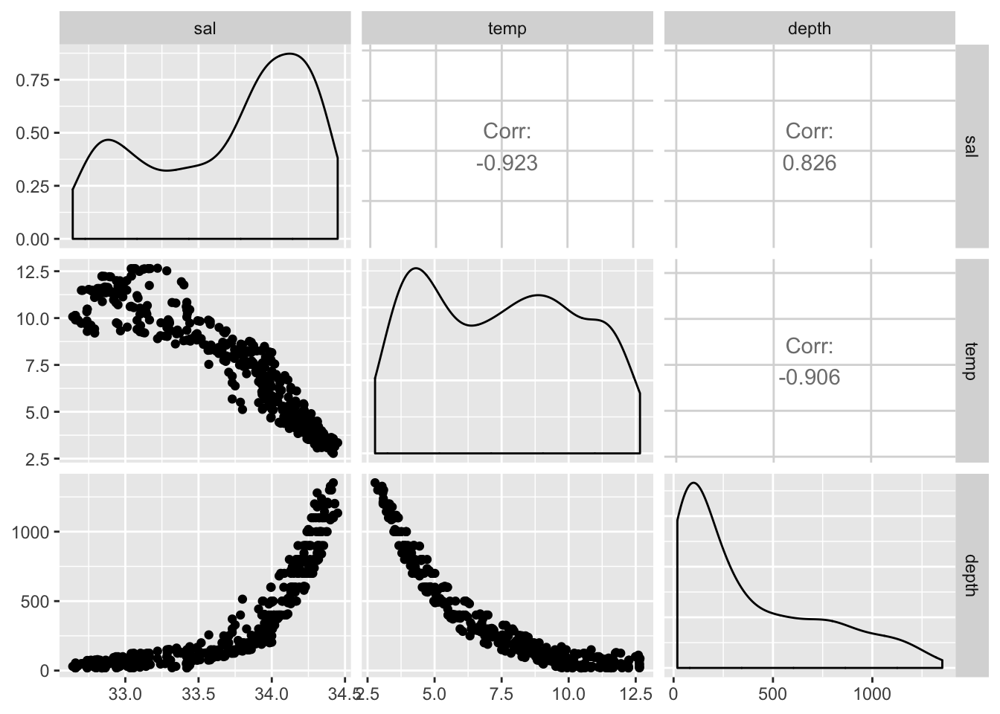
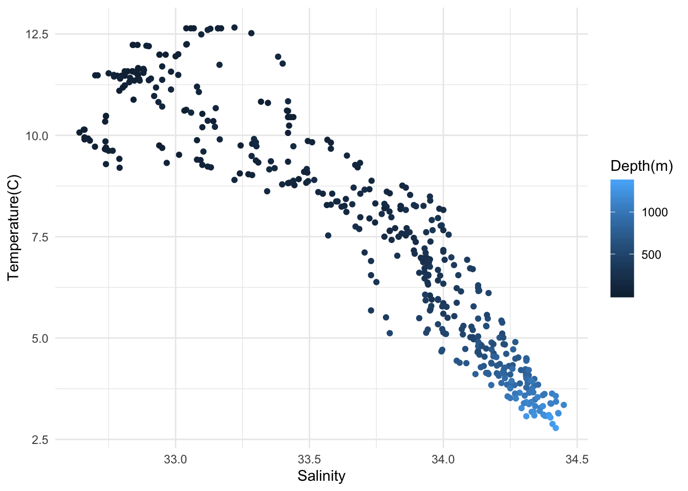
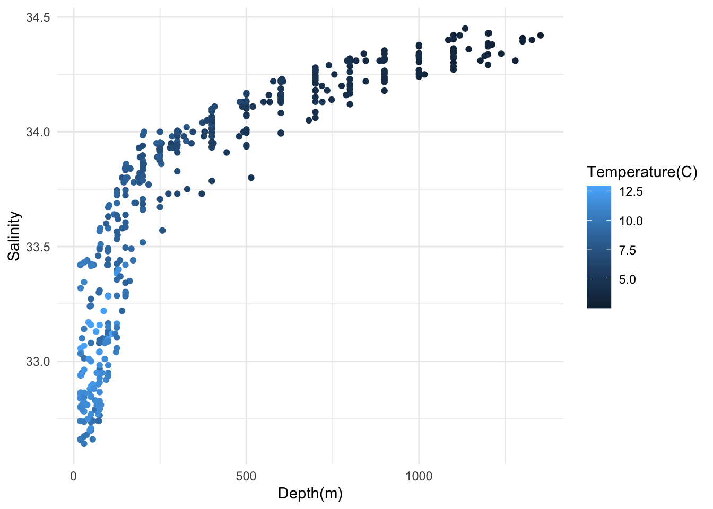
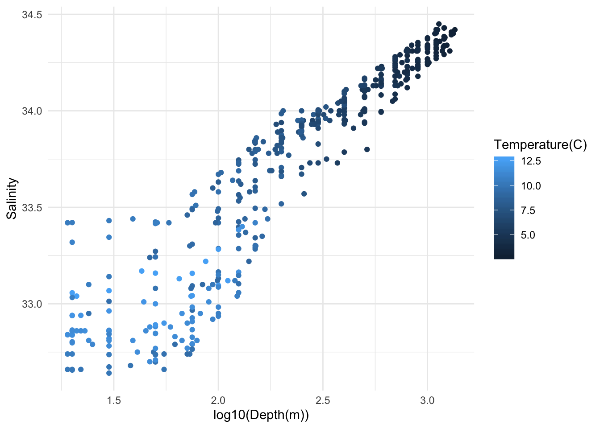
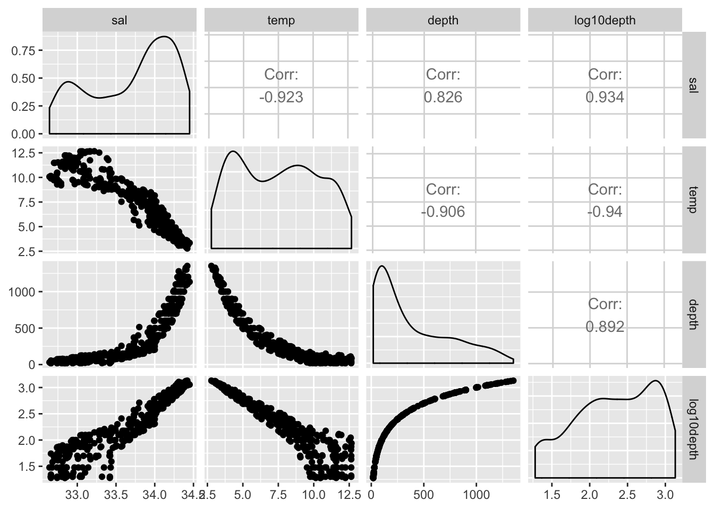
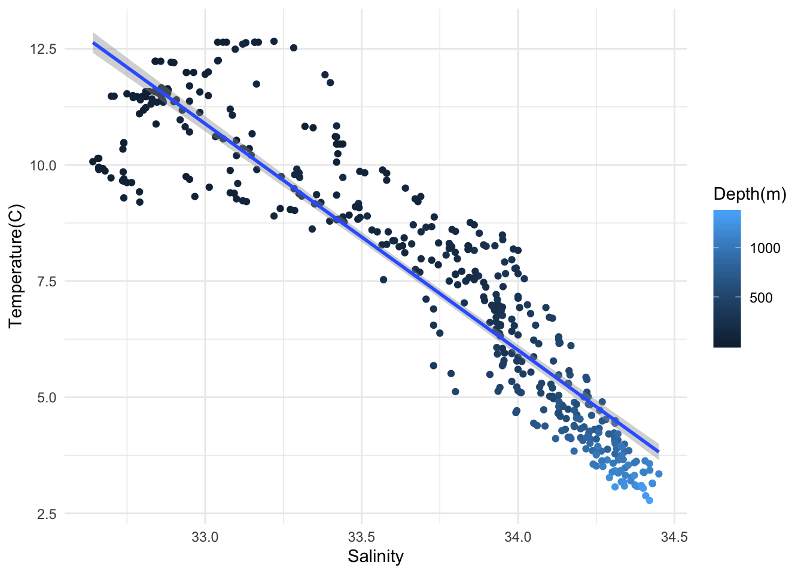
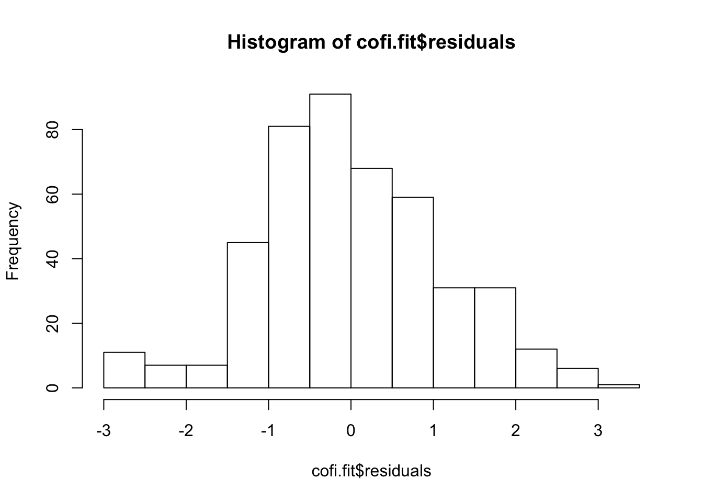
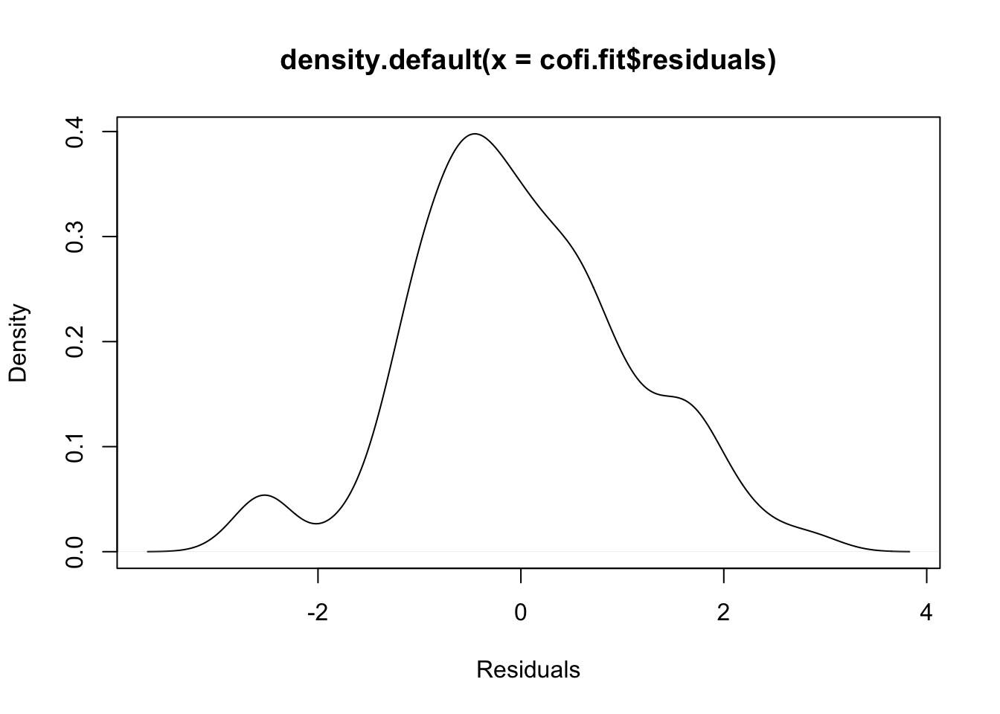

Last updated: 2020-03-06
Checks: 7 0
Knit directory: STA463_Spring_2020/
This reproducible R Markdown analysis was created with workflowr (version 1.4.0). The Checks tab describes the reproducibility checks that were applied when the results were created. The Past versions tab lists the development history.
Great! Since the R Markdown file has been committed to the Git repository, you know the exact version of the code that produced these results.
Great job! The global environment was empty. Objects defined in the global environment can affect the analysis in your R Markdown file in unknown ways. For reproduciblity it’s best to always run the code in an empty environment.
The command set.seed(20200213) was run prior to running the code in the R Markdown file. Setting a seed ensures that any results that rely on randomness, e.g. subsampling or permutations, are reproducible.
Great job! Recording the operating system, R version, and package versions is critical for reproducibility.
Nice! There were no cached chunks for this analysis, so you can be confident that you successfully produced the results during this run.
Great job! Using relative paths to the files within your workflowr project makes it easier to run your code on other machines.
Great! You are using Git for version control. Tracking code development and connecting the code version to the results is critical for reproducibility. The version displayed above was the version of the Git repository at the time these results were generated.
Note that you need to be careful to ensure that all relevant files for the analysis have been committed to Git prior to generating the results (you can use wflow_publish or wflow_git_commit). workflowr only checks the R Markdown file, but you know if there are other scripts or data files that it depends on. Below is the status of the Git repository when the results were generated:
Ignored files:
Ignored: .DS_Store
Ignored: .Rhistory
Ignored: .Rproj.user/
Ignored: lec/
Untracked files:
Untracked: docs/figure/slr_calcofi.Rmd/
Note that any generated files, e.g. HTML, png, CSS, etc., are not included in this status report because it is ok for generated content to have uncommitted changes.
“The CalCOFI data set represents the longest (1949-present) and most complete (more than 50,000 sampling stations) time series of oceanographic and larval fish data in the world. It includes abundance data on the larvae of over 250 species of fish; larval length frequency data and egg abundance data on key commercial species; and oceanographic and plankton data. The physical, chemical, and biological data collected at regular time and space intervals quickly became valuable for documenting climatic cycles in the California Current and a range of biological responses to them. CalCOFI research drew world attention to the biological response to the dramatic Pacific-warming event in 1957-58 and introduced the term “El Niño” into the scientific literature."
Here, we use only 500 observations to speed up calculation.
You can download orignial data from: https://www.kaggle.com/sohier/calcofi
if(FALSE){
install.packages("ggplot2")
install.packages("GGally")
install.packages("corrplot")
}
library(ggplot2)
library(GGally)Registered S3 method overwritten by 'GGally':
method from
+.gg ggplot2library(corrplot)corrplot 0.84 loadedtemp: temperature (Celsius)
sal: salinity (amount of salt dissolved in a body of water)
depth: depth (meter)
cofi <- read.table("https://raw.githubusercontent.com/dleelab/STA463_Spring_2020/master/data/calcofi_500.csv", header=TRUE, sep = ",")
cofi <- subset(cofi, depth>10)
head(cofi) sal temp depth
4 33.420 10.45 19
5 33.421 10.45 20
6 33.431 10.45 30
7 33.440 10.45 39
8 33.424 10.24 50
9 33.420 10.06 58dim(cofi)[1] 450 3summary(cofi) sal temp depth
Min. :32.64 Min. : 2.780 Min. : 19.0
1st Qu.:33.18 1st Qu.: 4.808 1st Qu.: 82.5
Median :33.88 Median : 7.575 Median : 250.0
Mean :33.69 Mean : 7.501 Mean : 377.4
3rd Qu.:34.16 3rd Qu.: 9.830 3rd Qu.: 600.0
Max. :34.45 Max. :12.660 Max. :1352.0 cofi.cor <- cor(cofi)
cofi.cor sal temp depth
sal 1.0000000 -0.9232948 0.8256423
temp -0.9232948 1.0000000 -0.9058069
depth 0.8256423 -0.9058069 1.0000000corrplot(cofi.cor, order="hclust")
ggpairs(cofi)
ggplot(cofi, aes(x=sal, y=temp, col=depth)) +
geom_point() +
labs(x="Salinity", y="Temperature(C)", col = "Depth(m)")+
theme_minimal()
ggplot(cofi, aes(x=depth, y=sal, col=temp)) +
geom_point() +
labs(x="Depth(m)", y="Salinity", col = "Temperature(C)")+
theme_minimal()
ggplot(cofi, aes(x=log10(depth), y=sal, col=temp)) +
geom_point() +
labs(x="log10(Depth(m))", y="Salinity", col = "Temperature(C)")+
theme_minimal()
cofi$log10depth <- log10(cofi$depth)
ggpairs(cofi)
cofi.fit <- lm(temp~sal,data=cofi)ggplot(cofi, aes(x=sal, y=temp, col=depth)) +
geom_point() +
geom_smooth(method='lm') +
labs(x="Salinity", y="Temperature(C)", col = "Depth(m)")+
theme_minimal()
summary(cofi.fit)
Call:
lm(formula = temp ~ sal, data = cofi)
Residuals:
Min 1Q Median 3Q Max
-2.86216 -0.72293 -0.07404 0.65318 3.01342
Coefficients:
Estimate Std. Error t value Pr(>|t|)
(Intercept) 171.66634 3.22695 53.20 <2e-16 ***
sal -4.87215 0.09576 -50.88 <2e-16 ***
---
Signif. codes: 0 '***' 0.001 '**' 0.01 '*' 0.05 '.' 0.1 ' ' 1
Residual standard error: 1.092 on 448 degrees of freedom
Multiple R-squared: 0.8525, Adjusted R-squared: 0.8521
F-statistic: 2589 on 1 and 448 DF, p-value: < 2.2e-16Q1. What is sample size?
Q2. What is b0 value?
Q3. What is b1 value?
Q4. What is fitted regression line?
Q5. Test statistic value for a hypothesis test on Beta0 ?
Q6. Test statistic value for a hypothesis test on Beta1?
Q7. What is MSE?
# Residual
# Sum of residuals
# Residual Sum of Squares
# SSE
# DF
# MSE
# Residual Standard Error: sqrt(MSE)
# cor(sal, temp)
# Sxx
# Syy
# Compute cor(sal, temp) using b1, Sxx and Syyconfint(cofi.fit) 2.5 % 97.5 %
(Intercept) 165.324497 178.008188
sal -5.060341 -4.683958# b1 +- T(1-alpha/2,n-2)*sqrt(MSE/Sxx)
MSE <- sum(cofi.fit$residuals^2)/cofi.fit$df.residual
Sxx <- sum((cofi$sal-mean(cofi$sal))^2)
tval <- qt(.975, df=cofi.fit$df.residual)
cofi.fit$coefficients[2]-tval*sqrt(MSE/Sxx) #lower bound sal
-5.060341 cofi.fit$coefficients[2]+tval*sqrt(MSE/Sxx) #upper bound sal
-4.683958 # b1 +- T(1-alpha/2,n-2)*sqrt(MSE*(1/n+mean(x)^2/Sxx))
MSE <- sum(cofi.fit$residuals^2)/cofi.fit$df.residual
Sxx <- sum((cofi$sal-mean(cofi$sal))^2)
n <- nrow(cofi)
tval <- qt(.975, df=cofi.fit$df.residual)
cofi.fit$coefficients[1]-tval*sqrt(MSE*(1/n+mean(cofi$sal)^2/Sxx)) #lower bound(Intercept)
165.3245 cofi.fit$coefficients[1]+tval*sqrt(MSE*(1/n+mean(cofi$sal)^2/Sxx)) #upper bound(Intercept)
178.0082 # Residual
hist(cofi.fit$residuals)
plot(density(cofi.fit$residuals), xlab="Residuals")
# Sum of residuals
sum(cofi.fit$residuals)[1] -7.607803e-14# Residual Sum of Squares
RSS <- sum(cofi.fit$residuals^2)
# SSE
SSE <- sum(cofi.fit$residuals^2)
# DF
DF <- cofi.fit$df.residual
# MSE
MSE <- SSE/DF
# Residual Standard Error: sqrt(MSE)
RSE <- sqrt(MSE)
# cor(sal, temp)
cor(cofi$sal, cofi$temp)[1] -0.9232948# Sxx
Sxx <- sum((cofi$sal-mean(cofi$sal))^2)
# Syy
Syy <- sum((cofi$temp-mean(cofi$temp))^2)
# Compute cor(sal, temp) using b1, Sxx and Syy
r <- cofi.fit$coefficients[2]*sqrt(Sxx/Syy)
r sal
-0.9232948 cor(cofi$sal, cofi$temp)[1] -0.9232948
sessionInfo()R version 3.6.1 (2019-07-05)
Platform: x86_64-apple-darwin15.6.0 (64-bit)
Running under: macOS Mojave 10.14.6
Matrix products: default
BLAS: /Library/Frameworks/R.framework/Versions/3.6/Resources/lib/libRblas.0.dylib
LAPACK: /Library/Frameworks/R.framework/Versions/3.6/Resources/lib/libRlapack.dylib
locale:
[1] en_US.UTF-8/en_US.UTF-8/en_US.UTF-8/C/en_US.UTF-8/en_US.UTF-8
attached base packages:
[1] stats graphics grDevices utils datasets methods base
other attached packages:
[1] corrplot_0.84 GGally_1.4.0 ggplot2_3.2.1
loaded via a namespace (and not attached):
[1] Rcpp_1.0.2 compiler_3.6.1 pillar_1.4.2
[4] RColorBrewer_1.1-2 git2r_0.26.1 plyr_1.8.4
[7] workflowr_1.4.0 tools_3.6.1 digest_0.6.20
[10] evaluate_0.14 tibble_2.1.3 gtable_0.3.0
[13] pkgconfig_2.0.2 rlang_0.4.0 yaml_2.2.0
[16] xfun_0.9 withr_2.1.2 stringr_1.4.0
[19] dplyr_0.8.3 knitr_1.24 fs_1.3.1
[22] rprojroot_1.3-2 grid_3.6.1 tidyselect_0.2.5
[25] reshape_0.8.8 glue_1.3.1 R6_2.4.0
[28] rmarkdown_1.15 reshape2_1.4.3 purrr_0.3.2
[31] magrittr_1.5 whisker_0.3-2 backports_1.1.4
[34] scales_1.0.0 htmltools_0.3.6 assertthat_0.2.1
[37] colorspace_1.4-1 labeling_0.3 stringi_1.4.3
[40] lazyeval_0.2.2 munsell_0.5.0 crayon_1.3.4